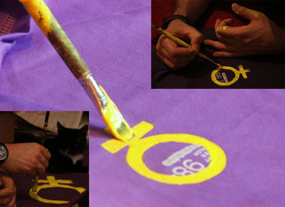
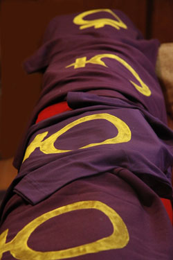
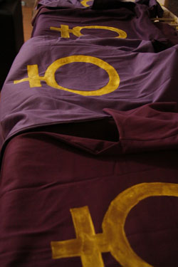
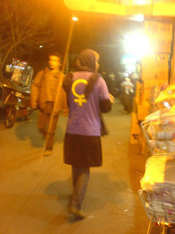
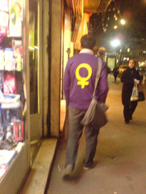
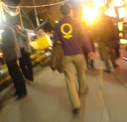

|
|

در روزهای پرتب و تاب 8 مارس
مقاومت نمادین چند فعال اجتماعی
یاشار گرمستانی
سه شنبه25 فروردین 1388

تغییر برای برابری - به نماد از منظرگاه های متنوعی نگاه شده است؛ هر دیدگاهی مستلزم رویکرد متفاوتی است. ابتدا نماد را به عنوان روبنای ایدئولوژی شناسایی کردند. روبنایی که به دلیل ارتباط بی واسطه با حواس پنجگانه می توانست برای بررسی زیربنای فکری منبع شناخت مناسبی باشد. مانند شناساگرهای شیمیایی که خود جزو ذات ماده نیستند و هیچ ارتباطی به اصل موضوع(ترکیبات و فرآید های شیمیایی در جریان) ندارند اما می توانند در تشخیص آنها به ما کمک کنند. در این نوع تفکر نمادها عینیت هایی اند در سطح که برای فرد پوزیتیویست ابزار مناسبی می شود برای شناخت عینیات نسبتا زیرین تر و برای اصحاب سنت دکارت وسیله ای برای بررسی ذهنیت.
اما در نگاه پسا ساختارگرا تفکیک سوژه و ابژه و نوع ارتباط زیربنایی روبنایی شان به چالش کشیده می شود و شواهدی بسیاری از تاثیرپذیری سوژه از همان ابژه هایی که به خیال خود مشغول بررسی آنها است بدست می دهد. پروسه شناخت پیچیده می شود به طوری که اگر بخواهیم بر اساس تفکرات قالبی تصویری از شرایط بدهیم می شود ماجرای ماری که همواره در تلاشی عبث برای گزیدن دم خود است و در نتیجه تنها به دور خود می چرخد. اما خوشبختانه در گستره ی فرا مدرنیته کنار شکستن شالوده ی دوگانه سوژه-ابژه مفاهیم مناسب دیگری هم یافت می شود: اصولا شاید شناخت معادل رسیدن به هدفی مشخص(در مثل مار گزیدن) نباشد و همان روند همواره چرخیدن و چرخیدن شناخت بشری را تعریف کند: شناخت مفهومی هماره است نه یک لحظه خاص. شناخت روند است نه رسیدن به هدفی از پیش تعیین شده.
بدیهی است که این شناخت ما است که رویکرد ما را در هر زمینه ای از جمله جنبش های اجتماعی تعیین می کند. وقتی که نمادها را در روندی دیالکتیکی در شکل گیری ذهنیات موثر بدانی ذهنیتی که به هر روی چه به عقیده برخی بطور یکسویه چه به عقیده دیگران دوسویه روی شکل گیری عینیات عمیق تر موثر است، می توانی قلمرو نمادها را به عنوان جنبه دیگری برای مبارزه برگزینی.
بسیاری اعتراض نمادین را محافظه کارانه و نوعی عقب نشینی تعبیر می کنند. اما اگر رویکرد جناح مقابل یعنی سرکوب را در نظر بگیریم ماجرا بوضوح فرق می کند. کیست که سرکوب نمادین خودانگیختگی و آنارشی را توسط ساختارهای قدرت انکار کند؟ جای جای دنیا و تاریخ ما پُر است از نمونه های آن. روزگاری برای تفکیک-سرکوب(به تعبیر خودشان سر جای خود نشاندن) بردگان از حلقه هایی برای گوش و بینی استفاده می کردند و زمانی در رویکردی مشابه آنانی که مذهب دیگری داشتند را با داغ نجاست کوبیدند. همین معامله را قرنها است با زنان بوسیله حجاب کرده اند و می کنند. فرای حجاب دور از حقیقت نیست مردسالاری را به عنوان یکی از نمادین ترین وجوه چندوجهی سرکوب خطاب کنیم. این سرکوب نمادین زن و زنانگی(از حذف نمادین تن زن گرفته تا تحقیر نمادین روحیات و صفات زنانه چه ذاتی بی انگاریمشان چه برساخته جامعه) مصادیق بی شماری دارد که برشمردن همه شان هم از حوصله این بحث خارج است هم آنقدر اظهر من الشمس است که چندان هم نیازی به آوردین مصداق نیست.
نه تنها نمی شود این شکل از سرکوب را انکار کرد بلکه ریشه ای بودنشان را هم نمی شود منکر شد. اسطوره ها و

ارزشگذاری هایشان توسط نشانه ها چنان بر سرت می کوبند که به جمجمه ای له شده و صورتی خونین مالین لبخند هم می زنی که ای خوشا درد که اگر نبود چقدر زندگی پوچ می شد(!)؛ ای خوشا تفاوت ارتفاعی که معلول ضربات رو فرق سر عده ای(شامل تو) است در کنار رها کردن دیگرانی(از ما بهتران) به حال خود بی آنکه ضربه ای به آنها زده شود(!)؛ از مابهترانی که یک جورهایی در قلمرو ایدئولوژی دسته ی این پتکِ کوبنده بدستانشان مماس می شود. ناگوارترین سرکوب ها سرکوبی است که آنرا آنگونه که هست نبینی در حالی که ظرف تو برای شدن را نسبت به دیگرانی فرادست(حال بر اساس هر ایدئولوژی ای مذهبی، نژادی، مردسالارانه و...) پاره پاره و کم حجم تر کند.
حال چگونه است که این نماد اینگونه فولاد چکش کوبنده بر سرها می شود اما نمی توان از آن داس هلالینی ساخت و دست چکش بدستان را قطع کرد؟ یا حتی فراتر از عینیت در مقابل عینیت(داس در مقابل چکش)، به ذهنیت های سرکوب گر هجوم برد و با نشان داد داسِ مقاومت نمادین جَنَم فروکوفتن چکش را ازشان گرفت... به علاوه حال که این خشونت نمادین خشن ترینِ سرکوب ها است، طبیعی است که مقاومت نمادین نه تنها به عنوان جنبه ای از مقاومت مشروع بلکه از قدرت مند ترین و موثر ترین جنبه های آن باشد. اینگونه بود که در جمع کوچکی از فعالین جنبش زنان با هدف به چالش کشیدن سرکوب جنسی، اعتراضی نمادین برای سالروز 8 مارس انتخاب شد و آنها با نمادهایی آخته(رنگ بنفش و لوگوی زنانگی) جنگ چریکی ای مبتنی بر نشانه ها را در خیابان کلید زدند.
جنگی که در خیابان کلید خورد
تهیه تی شرت ها خیلی سخت تر و وقت گیر تر از تصور اولیه بود؛ حداقل برای من که اینگونه بود. خلاصه هم در مرحله تهیه تی شرت های خام کلی دردسر کشیدیم(البته در این مرحله شخص من نبودم اما دورادور در جریان دشواری کار قرار گرفتم)؛ هم در مرحله اجرای لوگوهای مورد نظرمان روی آنها. من از همه جا بی خبر فکر می کردم اجرای همه لوگوها روی تی شرت ها روی هم دو الی سه ساعت وقتمان را بگیرد. زهی خیال باطل که دو شبانه روز بی خوابی و خستگی برای این کار صرف کردیم و در نهایت تن درد و رنگی شدن همه جانمان در کنار تی شرت های آماده نتیجه فعالیت هایمان بود.
برای اجرای برنامه یک ربع زودتر از ساعت مقرر رسیدم. تا ساعت تعیین شده به بررسی جوانب و محیط اطراف پرداختم و سر ساعت کاور رویی را در آورده و شروع کردم. برنامه این بود که با تی شرت های بسیار جیغ و متحدالشکل بطور کاتوره ای و نامنظم بین دو نقطه تعیین شده از قبل که در محدوده ی مراکز خرید بود، رفت آمد کنیم. من اولین نفر بودم و بقیه دیر تر رسیدند و خرد خرد به ماجرا پیوستند. طبق برنامه نباید به هم آشنای می دادیم برای همین بطور نامحسوسی آمار حضورشان را می گرفتم. در همین حیث و بیث بودم که یکی از دوستان را با قیافه ای بسیار متفاوت از همیشه دیدم و نتوانستم جلوی خنده ام را بگیرم. نگذاشته بود نه برداشته بود این زمان خاص رابرای این تغییر قیافه شگرف انتخاب کرده بود. لحظه خطرناکی بود. دو نفر که مثلا هیچ آشنایی قرار نیست با هم داشته باشند، با تی شرت مشابه از روبروی هم می آمدند و یکی شان به آن یکی می خندید. اما به هر حال به خیر گذشت.
در کل تعدادمان خیلی کمتر از برنامه اولیه بود. حداقل از 16 نفری که فکر می کردیم 8 نفر آمدند. به همین خاطر فکر می کردم برنامه به فرجام مدنظرمان نخواهد رسید. داشتم با خودم فکر می کردم بهتره فشرده تر از آنچه از ابتدا قرار بود عمل کنیم که نگاه های رهگذران را روی خودم احساس کردم. سرهایی که بر می گشتند و انگشت هایی که لباس دوستانی که جلوتر از من بودند را نشان می دادند. به دلیل تحقق آنچه که می خواستیم هرچند نه همه ی آن در پوست خودم نمی گنجیدم.
اما آنطور که یکی از دوستان مطلعمان کرد انگار این جلب توجه شامل حال مامورین آن منطقه هم شده بود. ما هم طبق برنامه ای از پیش تعیین شده برای این شرایط، جمیعا به مرکز خرید دیگری که آنرا هم از قبل معین کرده بودیم نقل مکان کردیم. اجرای پروژه در این مکان جدید نیز توجه مردم را به خود جلب کرد. حتی اینبار کار به جایی کشید که تعدادی از آنها با ما وارد دیالوگ شدند. از من دلیل را پرسیدند که جواب من واقعیت بود:«به مناسبت 8 مارس روز جهانی زن این لباس رو پوشیدم.» یکی در مقابل پرسید:«مگه شما زن گرایین؟» گفتم:«نه برابری خواهیم.» گفت«تو ایران که برابری بین زن و مرد هست.» و اینجا بود که بدون اینکه اراده ای درکار باشد دیالوگ دقیقا به همانجایی رسید که بهتر از آن نمی شد. تعدادی از قوانین تبعیض آمیز را برشمردم و جالب اینجا بود که خود آن شخص هم انگار جرقه ای در ذهنش زده شده باشد، در ادامه به چند تایی دیگر اشاره و صحبت های مرا تکمیل کرد. دیگری فلسفه ظاهر تی شرت ها را پرسید. من هم در جواب توضیح دادم بنفش رنگ مبارزات فمینیستی است همانطور که سرخ رنگ نمادین چپ ها و سوسیالیست ها است. فلسفه لوگوی فمیناین(زنانگی)♀ که نماد رحم و زایندگی زنان است را هم به گفته هایم اضافه کردم. بقیه دوستان هم تجربه های مشابهی داشتند که در مجموع نشان دهنده ی نزدیک شدن به هدف حرکتمان بود.
در مجموع با همه استرس ها و تپش قلبی که در این چند ساعت هر لحظه گریبانگیرم بود، روز بسیار زیبایی بر من گذشت. روزی که بعد از چند سال ما به طریقی 8 مارس را در خیابان میان مردم سپری کردیم. حال شاید نه به آن تاثیرگذاری ای که ایده آلمان بود(به دلیل تعداد کم که امیدوارم در آینده این نقیصه بزرگ رفع شود) اما به هر حال فعال و حاضر در صحنه؛ همانطور که بایسته عنوانی است که مدعی آنیم: اکتیویست اجتماعی.